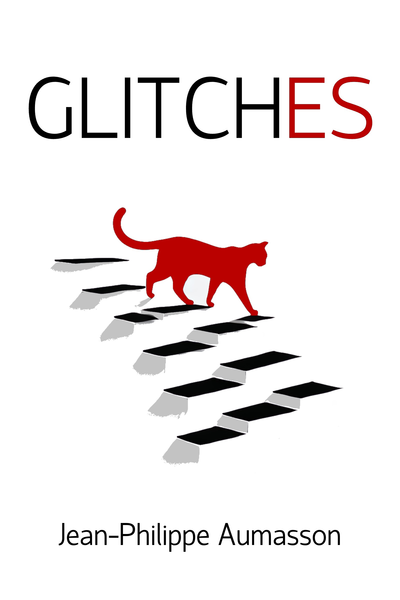

Glitches
Three Short Stories

Three interconnected stories. Reality bends and breaks in unexpected ways.
A woman trapped in a deadly time loop discovers her fate may hinge on a simple ritual.
She questions her sanity after a cupcake accident leads her to an ethereal Japanese professor.
A man awakens to confront supernatural threats in a sinister city.
These tales explore the line between the real and the impossible—where small choices unlock alternate worlds.
These stories emerged from my dreams. Please read them in the order
presented. The last story pays homage to David Lynch's work.
Download EPUB
Download PDF
Stores